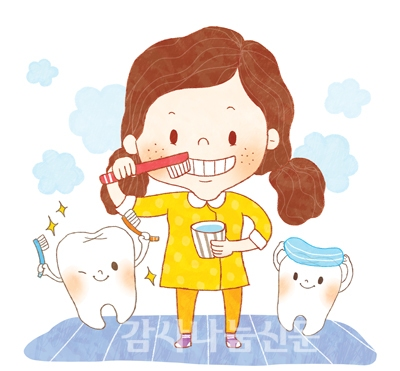
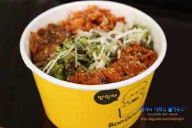

나의 하루
아침 : 7시기상 아침먹고 양치
아침~점심: 9시부터 수업시작 11시 50분에 수업종료
점심 : 수업을 듣는 E동에서 늘빛관으로 이동 늘빛관에서 제육컵밥+계란추가 후 맛있게 흡입과 친구들과의 이야기시간
점심~저녁: 2시부터 5시까지 강의를 듣고 집으로 퇴근
저녁 : 조촐한 저녁 식사를 맞추고 하루 일과를 본격적으로 시작
저녁~자정 전 : 그 날의 과제를 확인하고 내일 배울수업을 미리예습후 자유시간은 게임